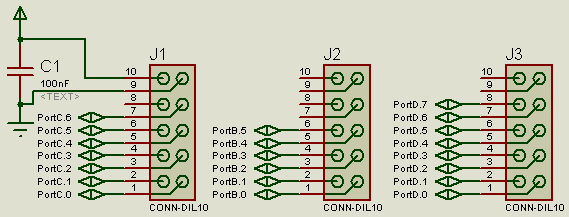

The Port Headers
On the STK500 you can see 5 port headers. These are for Ports A to E. As the ATmega8 only has ports B, C and D this board only has 3 headers. All of them provide Vcc and Gnd for external components, have a decoupling cap and are compatible to those on the STK:

(note: each connector has its own decoupling cap and connecton to the power lines. This is only shown for PortC here!)
You can see that not all pins are used. The mega8 doesn't have all those port pins. A special case is PortB: PortB.6 and PortB.7 are the crystal oscillator pins. In order to ensure correct operation of the crystal oscillator, these are located next to the crystal and NOT routed to the Port header (See Other Connectors).